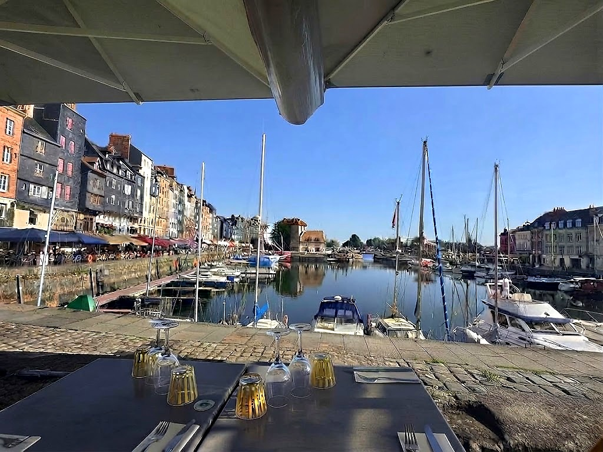
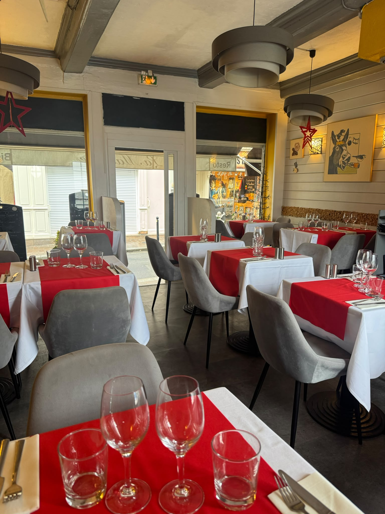
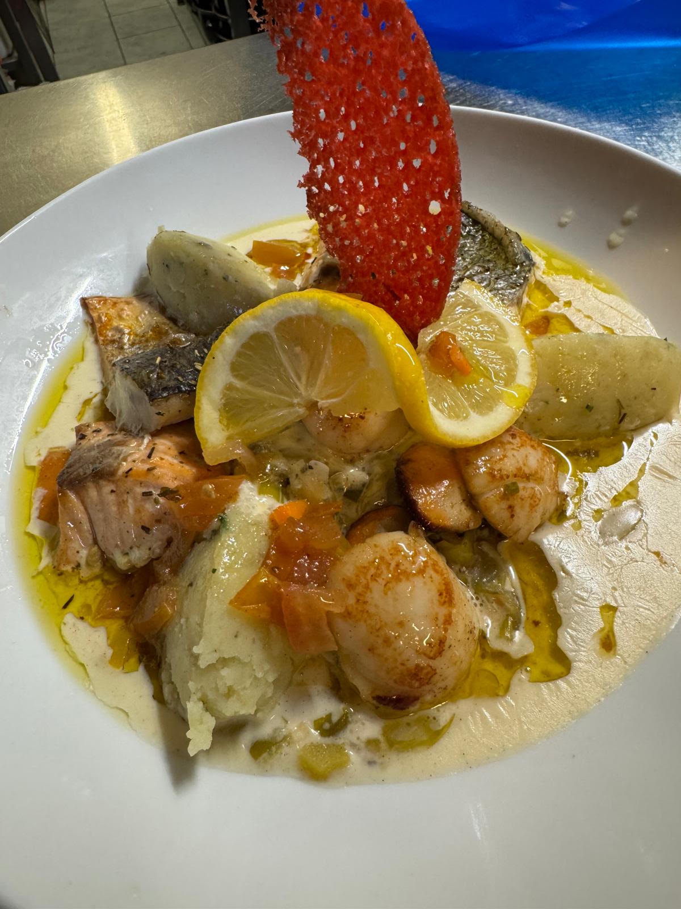
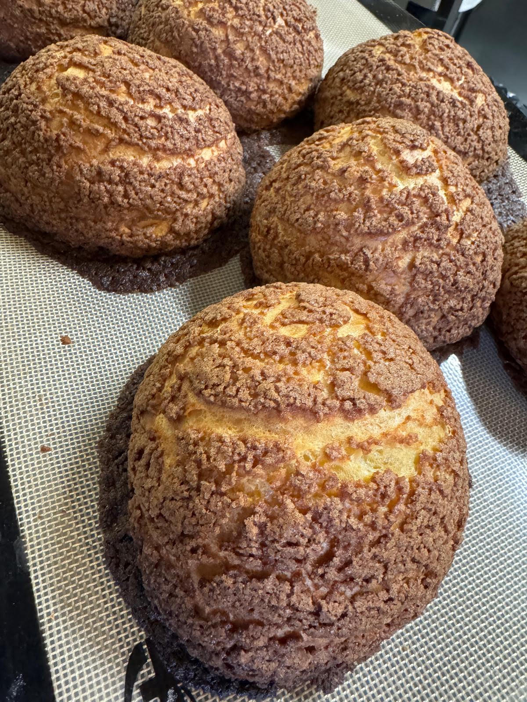
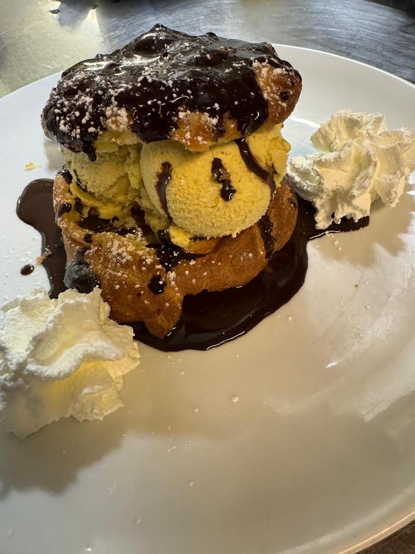
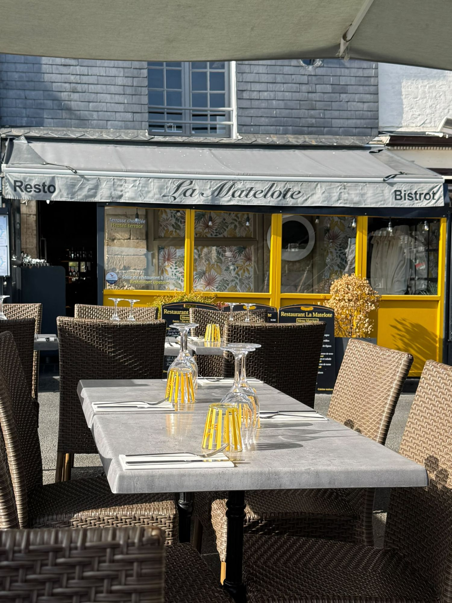

Restaurant de poissons, terrasse et salle à l'étage au cœur d'Honfleur.
Réserver / ContactProfitez d'un cadre unique face aux bassins d'Honfleur. Produits frais, cuisine maison et accueil chaleureux garanti, que ce soit en terrasse face aux bateaux ou dans notre salle intérieure cosy.
N'hésitez pas à nous appeler, quel que soit le nombre de convives — nous nous adaptons à tous les groupes.

Découvrez nos produits frais et spécialités normandes

Nos poissons et arrivages frais


Nos douceurs et coupes glacées maison
Lundi au Dimanche : 10h00 - 22h00
Fermé le mardi
09 81 28 76 11
lamatelotehonfleur@hotmail.com
(Pas de réservation en terrasse, sans rendez-vous)
